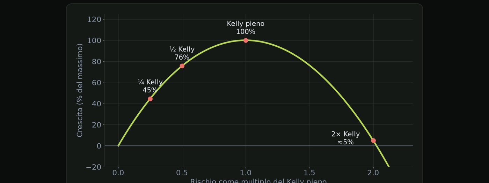

Materiale educativo, non consulenza finanziaria. Il trading con leva su forex, CFD e futures comporta un rischio elevato: puoi perdere tutto il capitale. Numeri, esempi e simulazioni non prevedono risultati futuri.
Il metodo più semplice e più usato per dimensionare ogni operazione.
Ci sono tre modi principali di dimensionare le operazioni. Lotto fisso: sempre lo stesso lotto, qualunque stop e qualunque capitale. Importo fisso: sempre cento euro di rischio, anche se il conto cala. E percentuale fissa: sempre l'uno per cento del capitale corrente, con il lotto che ne risulta.
| Metodo | Rischio prima | Rischio dopo −20% |
|---|---|---|
| Lotto fisso (0,4) | 1,0% | 1,25% (sale) |
| Importo fisso (100 €) | 1,0% | 1,25% (sale) |
| Percentuale fissa (1%) | 1,0% | 1,0% (resta) |
Conto da 10.000 € a 8.000 €.
| Capitale corrente | 8.000 € |
| Rischio 1% | 80 € |
| Stop | 25 pip |
| Lotti | 80 ÷ (25 × 10) |
| Protegge dopo le perdite | |
| Semplice da calcolare | |
| Funziona su ogni strumento |
| Dopo una serie, il recupero è lento | |
| Richiede un calcolo a ogni trade | |
| Non considera la volatilità |
Vantaggi e limiti del metodo. Protegge il conto dopo le perdite, è semplice da calcolare e funziona su qualsiasi strumento. Il recupero dopo una serie negativa è più lento, perché le posizioni sono più piccole; richiede un calcolo a ogni trade; e non considera la volatilità del mercato, ma a questo penseremo nella prossima lezione.
Il tuo lotto deve rispondere al conto. Non l'umore del giorno.
Adattare la distanza dello stop a quanto si muove il mercato.
Uno stop fisso a venti pip è tanto o poco? Dipende da quanto si muove il mercato in quel momento. Con volatilità alta, uno stop fisso scatta per puro rumore: vieni fermato prima che l'idea sia sbagliata. Con volatilità bassa, lo stesso stop è inutilmente largo.
L'ATR, Average True Range, misura quanto si muove in media una candela. Di solito si usa su quattordici periodi del timeframe su cui operi. È un indicatore standard di ogni piattaforma: non devi calcolarlo a mano.
Lo stop si può definire come un multiplo dell'ATR: stop uguale k per ATR. k è un moltiplicatore, spesso tra uno e mezzo e due. Va scelto e testato sul tuo sistema. Per esempio con ATR venti pip e k uguale due, lo stop è quaranta pip. Il lotto lo calcoli poi con la formula che già conosci.
| ATR | Stop (2×) | Rischio | Lotti |
|---|---|---|---|
| 10 pip | 20 pip | 100 € | 0,50 |
| 20 pip | 40 pip | 100 € | 0,25 |
| 40 pip | 80 pip | 100 € | 0,125 |
Con k = 2 e valore pip 10 € per lotto.
Tre attenzioni. Il target va adattato: se lo stop è più largo, a parità di RR anche il target si allontana. Non vale per tutti i sistemi: se l'idea ha un livello strutturale preciso, quello prevale. E testa il moltiplicatore sui tuoi dati: uno e mezzo e due danno risultati diversi per ogni sistema.
Il mercato decide quanto respira. Il rischio decide quanto compri.
Una formula famosa per il rischio ottimale, e perché va usata a pezzi.
L'idea di Kelly è che esista un rischio che massimizza la crescita del capitale nel lungo periodo. La formula lo calcola a partire dal win rate e dal rapporto tra guadagno e perdita. E il punto sorprendente è che, sopra quel valore, la crescita cala e poi diventa negativa. Rischiare troppo non è solo pericoloso: è perdente.
La formula è f stella uguale W meno uno meno W diviso R. f stella è la frazione di capitale da rischiare. W è il win rate. E R è il rapporto tra guadagno medio e perdita media.
| Win rate W | 45% |
| Rapporto R | 1,8 |
| (1 − W) ÷ R | 0,55 ÷ 1,8 = 0,306 |
| Kelly f* | 0,45 − 0,306 |

Il grafico mostra la crescita del capitale al variare del rischio, come multiplo del Kelly. A Kelly pieno la crescita è massima, ma il drawdown è enorme. A metà Kelly, crescita al settantasei per cento del massimo. A un quarto di Kelly, quarantacinque per cento. Il punto chiave è il lato destro: a due volte Kelly la crescita è quasi zero. Rischiare il doppio non è solo rischioso, azzera il vantaggio.
Per questo, in pratica, si usa una frazione di Kelly. I tuoi numeri sono stime: se win rate e rapporto sono sovrastimati, Kelly pieno è già troppo. Il drawdown a Kelly pieno è molto profondo, e difficile da sopportare. Un quarto o un mezzo Kelly riducono molto il rischio, perdendo solo una parte della crescita. Un quarto di Kelly, nel nostro esempio, è circa il tre virgola sei per cento.
Kelly è un tetto, non un obiettivo.
Regole per cambiare il rischio senza farsi guidare dall'emozione.
La tentazione è cambiare il rischio in base all'umore. Dopo le vincite: sono in forma, rischio di più. È fiducia eccessiva travestita da strategia. Dopo le perdite: devo recuperare, rischio di più. È il modo più rapido di trasformare un drawdown in una rovina. Entrambe le decisioni sono emotive, e le emozioni non conoscono la tua statistica.
| Perdita 1 · rischio 1% | capitale 99,0% |
| Perdita 2 · rischio 2% | 97,0% |
| Perdita 3 · rischio 4% | 93,1% |
| Perdita 4 · rischio 8% | 85,7% |
| Perdita 5 · rischio 16% | 72,0% |
| Perdita 6 · rischio 32% | 48,9% |
Esistono regole più sane. Ridurre il rischio dopo un drawdown. Per esempio, dimezzarlo se il calo supera il dieci per cento. Tornare alla normalità solo dopo un recupero, non dopo un solo trade vincente. E aumentare il rischio solo per scalini e su nuovi massimi, dopo molti trade, con regole scritte in anticipo.
| Condizione | Rischio per trade |
|---|---|
| Normale | 1% |
| Drawdown oltre 10% | 0,5% |
| Drawdown oltre 15% | 0,25% o stop |
| Nuovo massimo, dopo 50+ trade | puoi valutare +0,25 punti |
Soglie indicative, da adattare al proprio sistema.
Se cambi il rischio per come ti senti, il tuo piano è già finito.
Quando tre trade sono in realtà uno solo.
Ogni posizione ha il suo rischio, ma conta anche quello totale. Il rischio aperto è la somma dei rischi di tutte le posizioni. Tre trade all'uno per cento portano il rischio aperto al tre. Un limite tipico è tra il due e il quattro per cento, deciso prima. Conta solo ciò che puoi ancora perdere: una posizione con stop a pareggio non aggiunge rischio.
Il problema è la correlazione. Alcuni strumenti si muovono insieme. EURUSD, GBPUSD e AUDUSD spesso reagiscono tutti allo stesso dollaro. Tre operazioni di acquisto possono essere una sola scommessa, sul dollaro debole. E se la tesi è sbagliata, sbagliano tutte e tre insieme: perdi tre stop nello stesso momento.
| EURUSD long | 1% |
| Oro long | 1% |
| Indice short | 1% |
| Rischio effettivo | ~3% ma sparso |
| EURUSD long | 1% |
| GBPUSD long | 1% |
| AUDUSD long | 1% |
| Rischio effettivo | ~3% su una tesi |
Guarda tre posizioni da uno per cento. Se sono su mercati diversi, come un cambio, l'oro e un indice, il rischio è tre per cento ma distribuito su idee diverse. Se sono tre coppie contro il dollaro, il rischio è tre per cento su una sola tesi: dollaro debole. Nel caso peggiore, la seconda situazione si comporta come una posizione al tre per cento.
Tre regole pratiche. Fissa un limite al rischio aperto totale, per esempio tre per cento. Conta le posizioni correlate come un unico trade: dividi tra loro un solo rischio, non tre. E controlla sempre la valuta in comune: tre acquisti contro il dollaro sono, di fatto, un solo trade.
Tre posizioni sulla stessa idea sono un solo trade con tre volte il rischio.
Prova a risolverli senza guardare: le soluzioni sono nella pagina successiva.
| Capitale | 14.000 € |
| Rischio | 1,5% |
| Stop | 30 pip |
| Valore pip | 10 € per lotto |
| Rischio | 120 € |
| ATR | 30 pip |
| Moltiplicatore | 2 |
| Valore pip | 10 € per lotto |
| Win rate | 40% |
| R | 2 |
| Rischio iniziale | 2% |
| Raddoppi dopo ogni perdita | 2%, 4%, 8%, 16% |
| Domanda | capitale dopo 4 perdite? |
| Posizioni | 4, ciascuna 0,75% |
| Di cui correlate | 3 (tutte contro USD) |
| Domanda | rischio aperto totale e su una tesi? |
| Rischio in € | 14.000 × 0,015 = 210 € |
| Lotti | 210 ÷ (30 × 10) |
Il rischio è duecentodieci euro. Diviso trenta per dieci fa zero virgola sette lotti.
| Stop | 2 × 30 = 60 pip |
| Lotti | 120 ÷ (60 × 10) |
Lo stop è due per trenta: sessanta pip. I lotti sono centoventi diviso sessanta per dieci: zero virgola due.
| f* | 0,40 − 0,60 ÷ 2 |
| Calcolo | 0,40 − 0,30 = 0,10 |
| ¼ Kelly | 2,5% |
Zero virgola quaranta meno zero virgola sessanta diviso due: zero virgola quaranta meno zero virgola trenta. Dieci per cento. Un quarto è due virgola cinque per cento.
| Fattori | 0,98 × 0,96 × 0,92 × 0,84 |
| Capitale | 72,7% |
Moltiplichi zero virgola novantotto per zero virgola novantasei per zero virgola novantadue per zero virgola ottantaquattro: circa zero virgola settecentoventisette. Hai perso il ventisette per cento in quattro operazioni.
| Totale | 4 × 0,75% = 3,0% |
| Tesi USD | 3 × 0,75% = 2,25% |
Il totale è tre per cento. Tre posizioni sono sulla stessa tesi: due virgola venticinque per cento su un'unica idea. Se hai fissato un limite al due per cento per tesi, devi ridurre.
Spunta ogni punto solo se sapresti spiegarlo a voce a un altro trader.
Materiale educativo, non consulenza finanziaria. Il trading con leva su forex, CFD e futures comporta un rischio elevato: puoi perdere tutto il capitale. Numeri, esempi e simulazioni non prevedono risultati futuri. · riskly.trade